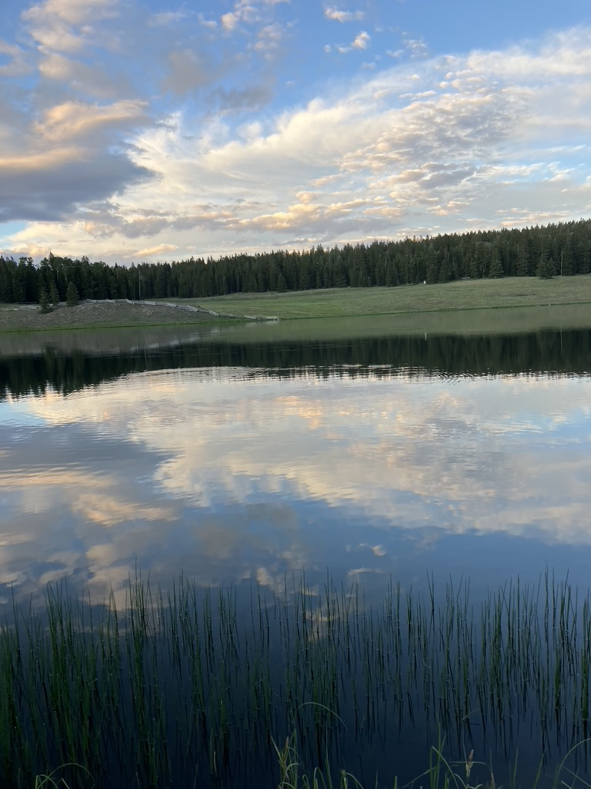
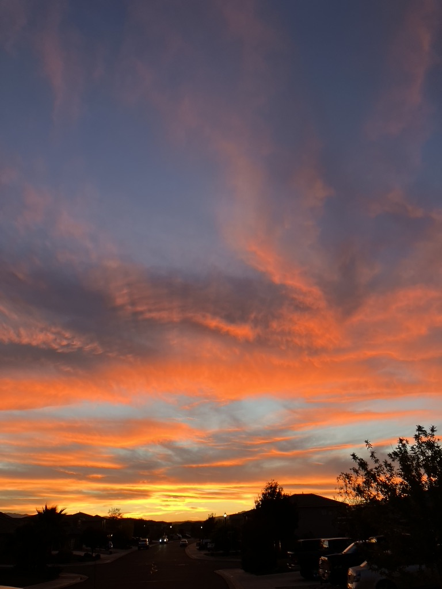
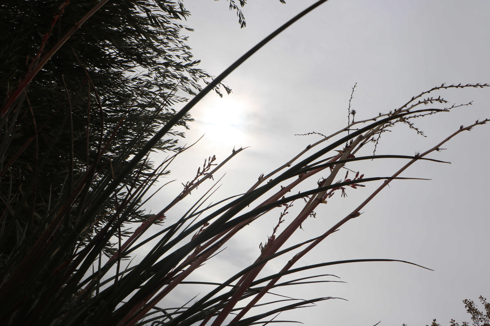

Featured Photos
What makes a good phtoto?
What make a good photo? I would be lying if I said I knew. I could write all about rule of thirds, perspective, exposure, and every other element that makes up a photo, but I believe that you don't have to know a thing about photography to capture a good photo. Photography which means a "good photo" means something different for everyone. If you like the pictures you take, then they become good photos. I enjoyed taking these featured photos because they are all so different and each one taught me something about photography, and something about myself. As I have learned mor and more about photography as an art, I have fallen in love with the way color and light can be captured, and I felt these photos showcase light and color in very interesting ways.

Timeless Trail - The trail winds ahead like an easy conversation, familiar and unhurried. Every step feels like catching up with an old friend.

Reflection Lake - The lake rests quietly, reflecting the morning sky like a perfect mirror. For a moment, the world feels completely still.

Golden Good-bye - The sky lights up in a burst of color, like the day’s way of ending on a high note. It feels warm, bright, and impossible not to smile at.

Orange Radiance - Bright and full of life, the flower seems to soak up every bit of sunlight. It’s a small reminder of how something simple can feel so vibrant.
